This lesson uses data from the National Ecological Observatory Network (NEON) [link]. This data is publicly available, along with lots of other cool ecological data.
Learning objectives
- Numerically solve differential equations with multiple initial conditions
- Work with and plot time series data
- Fit models to time series data (simulated and real)
Lesson outline
Total lesson time: 2 hours
- Recap: drawing phase portraits and numerically solving differential equations (10 min)
- Numerical solutions with multiple initial conditions (10 min)
- Fitting models to data
- Fitting simulated data (20 minutes)
- Exploring and plotting time series data (20 min)
- Fitting real data (40 minutes)
Setup
install.packages('tidyverse')(done already)install.packages('deSolve')(done already)- Download the data: https://github.com/UofTCoders/rcourse/blob/master/data/plant_phenology.csv
Drawing phase portraits in one dimension:
ode: define a function that calculates \(\frac{dN}{dt}\) for your model, making sure that it’s in the correct format with arguments t, state, and parameters. Call the function ode and give it the parameters y = state, times = times, func = logistic_fn, parms = parametersLet’s make a pretty plot of numerical solutions for the logistic equation from a few different starting points.
# define function to be in the format that `ode` uses
logistic_fn <- function(t, state, parameters) {
# Calculates dN/dt for the logistic equation
# t: time point at which to evaluate derivative
# state: vector of variables (here it's just N)
# parameters: vector of model parameters c(r, K)
N <- state
r <- parameters['r'] # get the element labelled 'r'
K <- parameters['K'] # get the element labelled 'K'
#rate of change
dN <- r * N * (1 - N / K)
#return rate of change
return(list(c(dN)))
}# Solve using ode
# define parameters for the ode function
parameters <- c(r = 0.5, K = 50) # use named parameters for clarity
initial_conditions <- seq(10, 80, by = 10) # a vector of initial conditions
times <- seq(0, 15, by = 0.01)
# run ode inside a loop to calculate trajectories for several initial conditions
results <- data.frame(initial_conditions = seq(10, 80, by = 10)) %>% # CTRL-shift-m to make pipe
# 'do' is a dplyr function that returns a dataframe after doing a series of computations.
# once the results are in a data frame, everything we've learned about ggplot and dplyr can be used!
do(data.frame( # 'data.frame' converts the output of 'ode' to a dataframe
ode(
y = initial_conditions, # each time the 'do' loop runs, a new initial condition will be used
times = times,
func = logistic_fn,
parms = parameters
)
))
# display the first few rows of the results
head(results) ## time X1 X2 X3 X4 X5 X6 X7 X8
## 1 0.00 10.00000 20.00000 30.00000 40.00000 50 60.00000 70.00000 80.00000
## 2 0.01 10.04006 20.06003 30.05997 40.03994 50 59.94021 69.86063 79.76131
## 3 0.02 10.08024 20.12012 30.11988 40.07976 50 59.88083 69.72250 79.52522
## 4 0.03 10.12054 20.18027 30.17973 40.11946 50 59.82187 69.58560 79.29169
## 5 0.04 10.16096 20.24047 30.23951 40.15904 50 59.76332 69.44992 79.06069
## 6 0.05 10.20150 20.30074 30.29924 40.19850 50 59.70517 69.31544 78.83217This is exactly what we wanted. We have chosen a set of initial conditions (seq(10, 80, by = 10)) and created a dataframe that has one column of times (time) and a column for each trajectory resulting from each initial condition (X1, X2, …). Now we can use ggplot to plot all the trajectories.
# make a plot
results %>%
gather(Column, Value, -time) %>%
ggplot(aes(x = time, y = Value, color = Column)) +
geom_line(aes(x = time, y = Value)) +
labs(y = "Population size")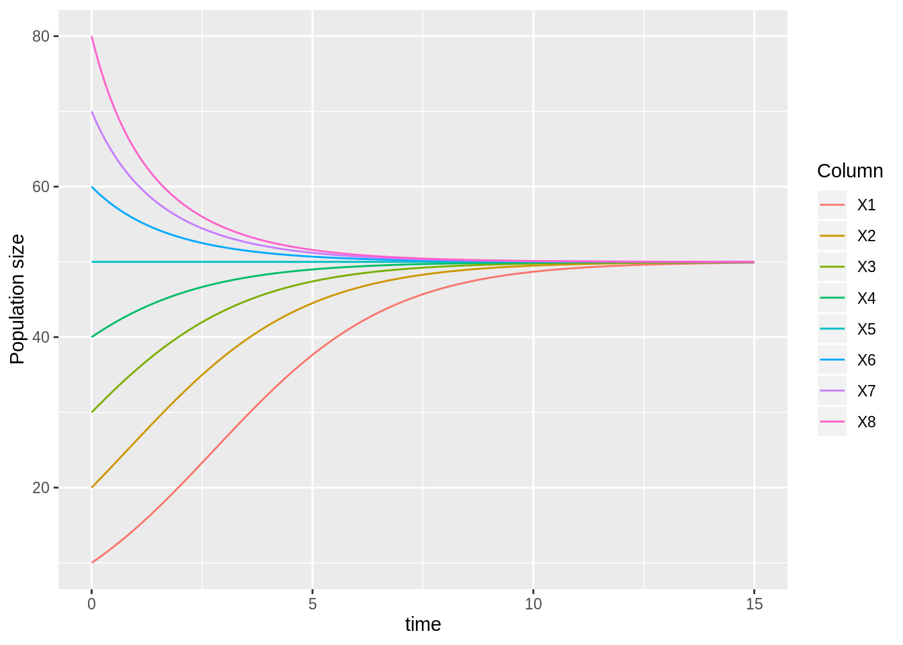
This plot very nicely summarizes the behaviour of the logistic equation: it shows the path that the population size \(N\) will take in time from several initial conditions. Importantly, the carrying capacity \(K\) which we set to be \(50\) is clearly a stable fixed point: all the trajectories go towards \(K\).
Modify the plotting code above so that the legend lists the initial conditions for each line instead of X1, X2, etc.
Fitting data is something we’ve already spent a lot of time on in this course, and there are many different strategies for choosing parameters for a model depending on the assumptions you make about your data and model. Today we will use least squares to fit a model to time series data. I will show you a method for doing ‘brute force’ least squares fitting so that you can fit any model you like using the same procedure, but there are certain cases in which it is possible to use lm to fit your data.
Suppose we repeatedly measure a bacterial population’s size over time, and suppose we want to fit our data to an exponential growth model.
Let’s simulate some data from an exponential function to work with.
times <- seq(0,10, by = 0.2) # sample times
r <- 0.2 # growth rate
N0 <- 10 # initial population
# use the function 'rnorm' to add noise to the data
Ndata <- N0*exp(r*times) + rnorm(n = length(times), mean = 0, sd = 0.75)
Ndata[1] <- N0 # fix the starting value to be N0 - this means we don't have to fit the intercept
qplot(times,Ndata) # check with a plotNow let’s assume we don’t know the growth rate \(r\) and we want to extract it from the data — we want to fit the data to an exponential growth model and find the value of \(r\) that gives the best fit.
To do this, we need a way to tell if a fit is good or bad. What criteria should we use to determine if a fit is good? One option is to just try several parameter values and try to manually adjust the parameter until the fit looks good. This is imprecise and not reproducible, but it’s often a good place to start to get an idea of what parameter range to check.
The idea behind least squares fitting is that we want to minimize the difference between our model’s prediction and the actual data, and we do that by minimizing the sum of the squares of the residuals. Residuals (or errors) are the difference between the model and the data for each data point. The purpose of taking the square of each residual is to take out the influence of the sign of the residual.
The sum of the squares of the residuals is just a number, and now we have a criteria we can use to determine which of two fits is better: whichever fit minimizes that number is the better fit.
In practice, there are many ways to find the particular parameter that gives the best fit. One way is to start at some parameter value, then start adjusting it by small amounts and checking if the fit gets better or worse. If it gets worse, go in the other direction. If it gets better, keep going in that direction until it either starts getting worse again or the amount by which it gets better is very small. This type of algorithm is called gradient descent.
Another option is to try a range of parameter values and choose the one that gives the best fit out of that list. This is simpler to implement than the previous algorithm, but it’s also computationally more costly: it can take a long time, especially if you don’t know which range of parameters to try ahead of time.
We will do some examples of the second method today, what we’ll call ‘brute-force least squares’.
# Make a range of r parameter values to try
r_vals <- seq(0.01, 0.3, by = 0.01)
# use the function 'sapply' to loop over r_vals list
# everything inside curly braces is a function that gets executed for each value of r
resids_sq <- sapply(r_vals, function(r) {
prediction <- Ndata[1] * exp(r * times) # we're not fitting N0, just assuming it's the first data point
residuals <- prediction - Ndata
return(sum(residuals^2))
})(Read more about the apply family of functions in the documentation.)
Let’s plot the sum of residuals squared vs. \(r\) to find which value of \(r\) fits best:
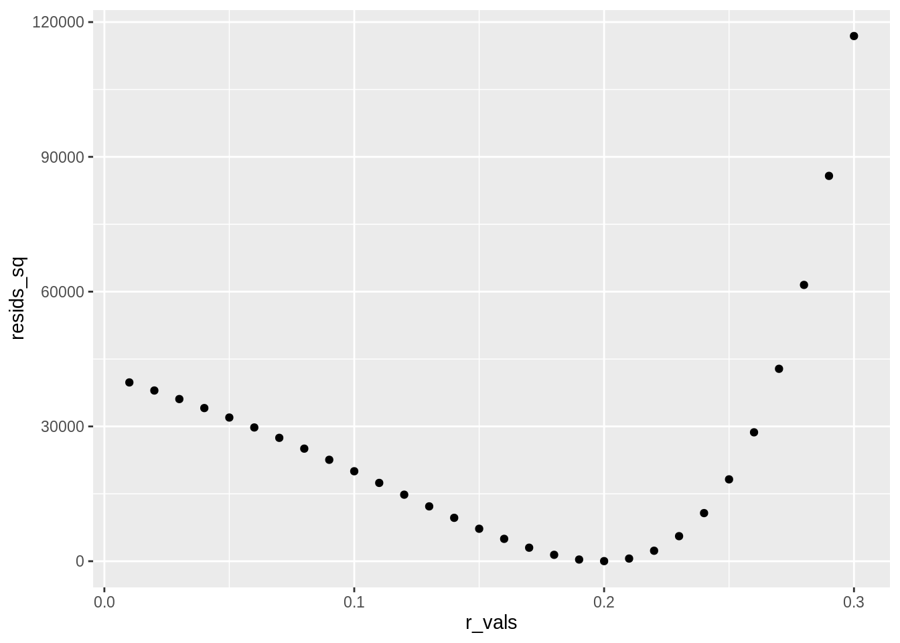
We can see visually that the minimum is around \(r = 0.2\), but to extract that number from the list we can use the function which:
## [1] 0.2We got the ‘correct’ value of \(r\), the one that we originally used to simulate the data.
Finally, let’s plot the fit against the original data:
Now let’s do the same using the lm function. To use the lm function to fit an arbitrary function, you need to be able to invert your function into the form \(y = \alpha + \beta x\). This is not always possible; for example, a function that is non-monotonic (goes up and down), such as a sine wave, can’t be inverted unambiguously. Here, our function is \(N = N_0 \text{e}^{rt}\), and since we want to extract the fit parameters \(r\) and \(N_0\), we should get \(t\) out of the exponent. Taking the logarithm of both sides, we get
\[\text{log}N=\text{log}N_0 + rt\]
Remember that the natural logarithm (log in R and written \(\text{log}\) for us) is the inverse of the exponential function exp (\(\text{e}\)): \(\text{e}^{\text{log}a} = \text{log}(\text{e}^{a})= a\).
Our equation is now in the form \(y = \alpha + \beta x\), with \(y = \text{log}N\), \(\beta = r\), \(\alpha = \text{log}N_0\), and \(x = t\). Now we can use lm:
##
## Call:
## lm(formula = log(Ndata) ~ times)
##
## Residuals:
## Min 1Q Median 3Q Max
## -0.066072 -0.013871 -0.001559 0.014963 0.079142
##
## Coefficients:
## Estimate Std. Error t value Pr(>|t|)
## (Intercept) 2.306138 0.008490 271.6 <2e-16 ***
## times 0.198726 0.001463 135.8 <2e-16 ***
## ---
## Signif. codes: 0 '***' 0.001 '**' 0.01 '*' 0.05 '.' 0.1 ' ' 1
##
## Residual standard error: 0.03076 on 49 degrees of freedom
## Multiple R-squared: 0.9974, Adjusted R-squared: 0.9973
## F-statistic: 1.845e+04 on 1 and 49 DF, p-value: < 2.2e-16We can see that the beta coefficient does match the value of \(r\) that we started with, but the Intercept value is harder to assess because it’s actually \(\text{log}N_0\) instead of just \(N_0\). We can get back \(N_0\) using exp:
## (Intercept)
## 10.03559## times
## 0.1987257And we can use the fit parameters to plot the result.
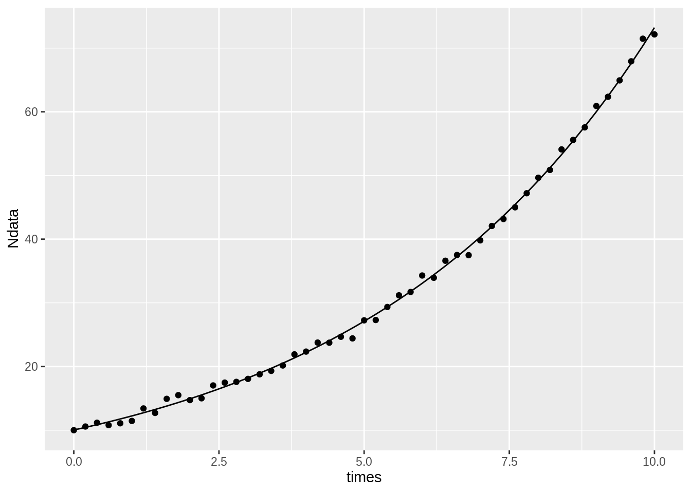
One advantage to using lm when possible is that it can more easily fit multiple parameters than when you’re fitting by hand. lm also gives you things like confidence intervals, and you can easily apply the model selection techniques outlined last week.
But be careful when converting a model to a form that can be fit with lm. By applying functional transformations to your model, you are subtly changing its assumptions. For example, we assume when using least squares that the residuals are normally distributed (which they were in our simulated data), however, when taking the logarithm of both sides, the residuals will no longer be normally distributed. We can see this if we add a bit more data to our simulated exponential model.
times <- seq(0,20, by = 0.01) # sample times
r <- 0.2 # growth rate
N0 <- 10 # initial population
# use the function 'rnorm' to add noise to the data
Ndata <- N0*exp(r*times) + rnorm(n = length(times), mean = 0, sd = 10)
Ndata[1] <- N0 # fix the starting value to be N0 - this means we don't have to fit the intercept
qplot(times, Ndata)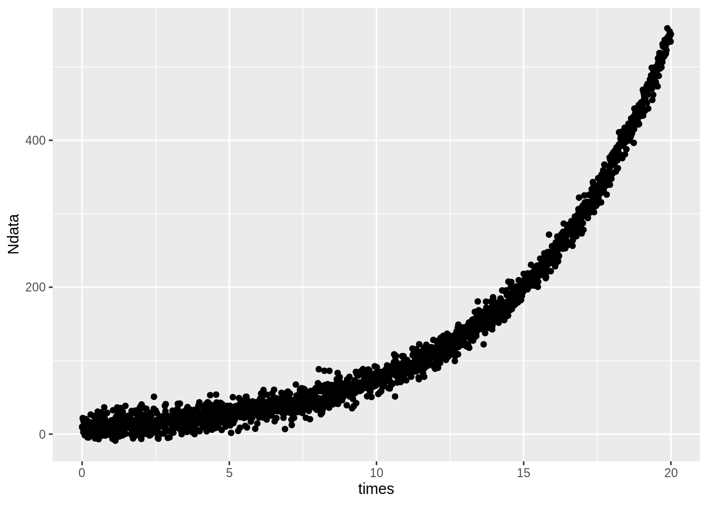
# Fit using explicit 'brute force' least squares
# Make a range of r parameter values to try
r_vals <- seq(0.01, 0.3, by = 0.005)
# use the function 'sapply' to loop over r_vals list
# everything inside curly braces is a function that gets executed for each value of r
resids_sq <- sapply(r_vals, function(r) {
prediction <- Ndata[1] * exp(r * times)
residuals <- prediction - Ndata
return(sum(residuals^2))
})
best_fit <- which(resids_sq == min(resids_sq))
r_fit <- r_vals[best_fit] # Fit by inverting the equation and using lm
result <- lm(log(Ndata) ~ times)
N0 <- exp(coef(result)["(Intercept)"])
r <- coef(result)["times"]Now we can compare the distribution of the residuals in both cases. One of the assumptions of least squares is that the residuals are normally distributed.
prediction_lm <- log(N0) + r * times # best fit using lm
prediction_ls <- Ndata[1] * exp(r_fit * times) # best fit using least squares explicitly
resids_lm <- prediction_lm - log(Ndata)
resids_ls <- prediction_ls - Ndata
resids_lm <- resids_lm[!is.na(resids_lm)]# calculate a normal distribution using the standard deviation of each set of residuals
x_vec_ls <- seq(-30, 30, by = 0.5)
sigma_ls <- sd(resids_ls)
gaussian_ls <- exp(-x_vec_ls^2/(2*sigma_ls^2))/sqrt(2*pi*sigma_ls^2)
x_vec_lm <- seq(-2, 3, by = 0.05)
sigma_lm <- sd(resids_lm)
gaussian_lm <- exp(-x_vec_lm^2/(2*sigma_lm^2))/sqrt(2*pi*sigma_lm^2)The residuals for the original equation are in fact normally distributed, which is how we set it up in the first place.
qplot() +
geom_histogram(aes(x=resids_ls, y = ..density..), binwidth = 2) +
geom_line(aes(x = x_vec_ls, y = gaussian_ls))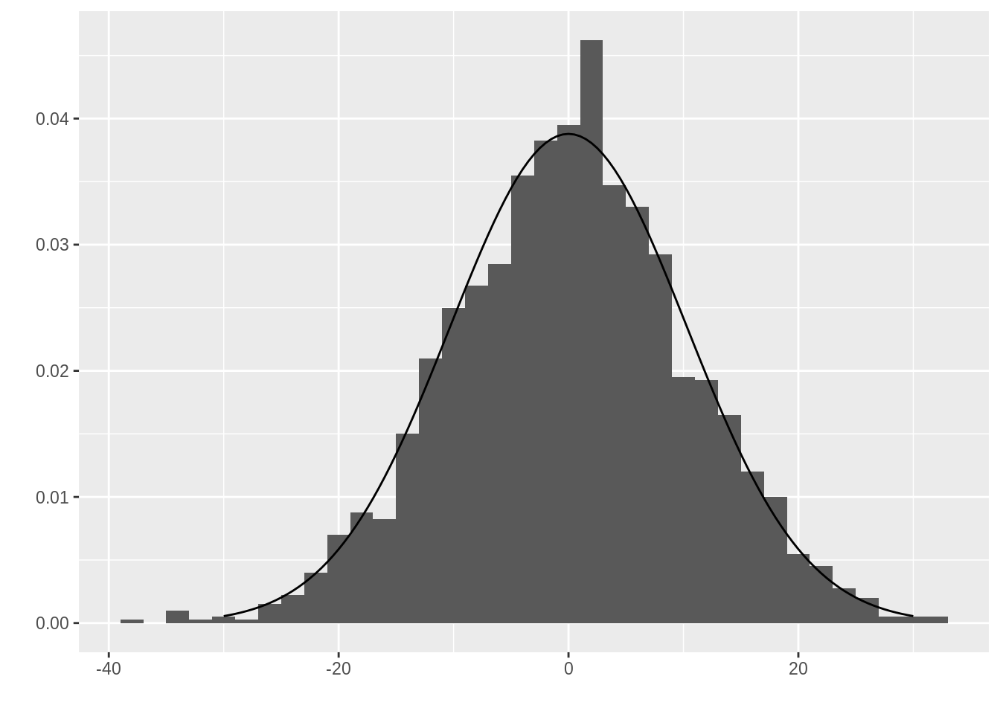
BUT the residuals for the inverted equation are NOT normally distributed.
qplot() +
geom_histogram(aes(x = resids_lm, y = ..density..), binwidth = 0.05) +
geom_line(aes(x = x_vec_lm, y = gaussian_lm))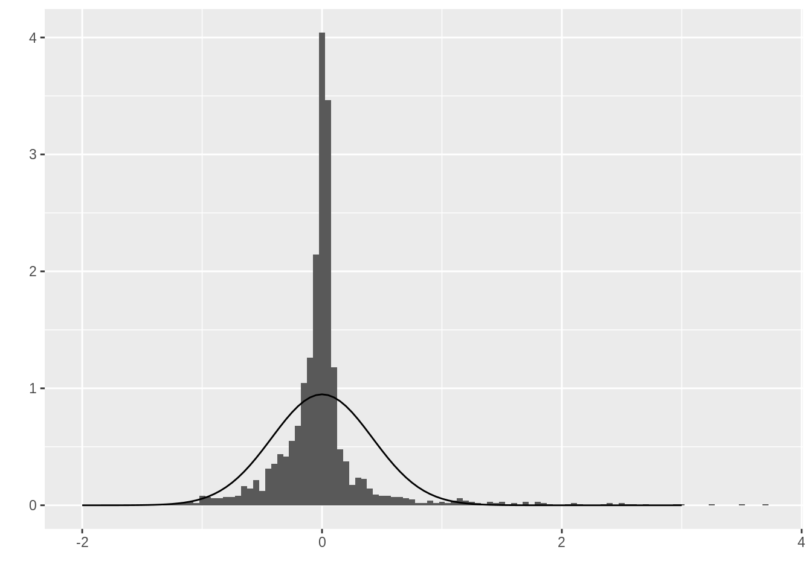
When is it appropriate to use least squares to fit your data? These assumptions are a recap of the assumptions of linear models section in lecture 8.
Assumptions of least squares:
Now that we’ve fit some simulated data, let’s try it out on real data.
Today we’ll be working with plant phenology data: phenology is the study of periodic or cyclic natural phenomena, and this dataset contains observations of the seasonal cycles of plants at three NEON sites in the US: Blandy Experimental Farm (BLAN) and the Smithsonian Conservation Biology Institute (SCBI) in Virginia, and the Smithsonian Environmental Research Center (SERC) in Maryland.
## Observations: 12,573
## Variables: 25
## $ namedLocation <chr> "BLAN_061.phenology.phe", "BLAN_06…
## $ siteID <chr> "BLAN", "BLAN", "BLAN", "BLAN", "B…
## $ plotID <chr> "BLAN_061", "BLAN_061", "BLAN_061"…
## $ date <date> 2015-06-25, 2015-06-25, 2015-06-2…
## $ editedDateStat <date> 2015-07-22, 2015-07-22, 2015-07-2…
## $ individualID <chr> "NEON.PLA.D02.BLAN.06289", "NEON.P…
## $ growthForm <chr> "Deciduous broadleaf", "Deciduous …
## $ phenophaseName <chr> "Leaves", "Leaves", "Leaves", "Lea…
## $ phenophaseStatus <chr> "yes", "yes", "yes", "yes", "yes",…
## $ phenophaseIntensityDefinition <chr> "Percentage of the canopy that is …
## $ phenophaseIntensity <chr> ">= 95%", ">= 95%", ">= 95%", ">= …
## $ remarksStat <chr> NA, NA, NA, NA, NA, NA, NA, NA, NA…
## $ decimalLatitude <dbl> 39.05963, 39.05963, 39.05963, 39.0…
## $ decimalLongitude <dbl> -78.07385, -78.07385, -78.07385, -…
## $ elevation <dbl> 183, 183, 183, 183, 183, 183, 183,…
## $ transectMeter <dbl> 497, 469, 491, 484, 504, 506, 498,…
## $ directionFromTransect <chr> "Left", "Left", "Left", "Right", "…
## $ ninetyDegreeDistance <dbl> 1.0, 2.0, 0.5, 0.5, 0.5, 1.0, 2.0,…
## $ sampleGeodeticDatum <chr> "WGS84", "WGS84", "WGS84", "WGS84"…
## $ addDate <date> 2017-02-24, 2017-02-24, 2016-04-2…
## $ editedDate <date> 2017-03-31, 2017-03-31, 2016-05-0…
## $ taxonID <chr> "RHDA", "RHDA", "RHDA", "RHDA", "L…
## $ scientificName <chr> "Rhamnus davurica Pall.", "Rhamnus…
## $ remarks <chr> NA, NA, "Nearly dead shaded out", …
## $ phenophaseIntensityMean <dbl> 0.975, 0.975, 0.975, 0.975, 0.975,…Many of these columns aren’t that relevant for us, but some that we’re definitely interested in are date, phenophaseIntensity, and scientificName. Let’s take a look at what kind of factors we have in the last two columns.
## # A tibble: 7 x 2
## scientificName n
## <chr> <int>
## 1 Fagus grandifolia Ehrh. 1478
## 2 Juglans nigra L. 2431
## 3 Lindera benzoin (L.) Blume 1413
## 4 Liquidambar styraciflua L. 135
## 5 Liriodendron tulipifera L. 4112
## 6 Lonicera maackii (Rupr.) Herder 1549
## 7 Rhamnus davurica Pall. 1455## # A tibble: 7 x 2
## phenophaseIntensity n
## <chr> <int>
## 1 < 5% 1318
## 2 >= 95% 4719
## 3 25-49% 875
## 4 5-24% 935
## 5 50-74% 1555
## 6 75-94% 1997
## 7 <NA> 1174These are 7 species of tree / shrub in this dataset. Feel free to look up what the common names are for each of these; for example, Liriodendron tulipifera, the tulip tree, can be found along the US east coast as well as in Southern Ontario.
Lipidoptera tulipifera, by Jean-Pol GRANDMONT - Own work, CC BY 3.0, https://commons.wikimedia.org/w/index.php?curid=9873223
Notice too that the phenophaseIntensity column is a character column, so if we want to use those values as numbers for plotting, we’ll need to convert them to something numeric. I did this manually to create the column phenophaseIntensityMean, which takes the character value in the phenophaseIntensity column and converts it to a number which is the midpoint of that interval.
## chr [1:12573] ">= 95%" ">= 95%" ">= 95%" ">= 95%" ">= 95%" ">= 95%" ...I also subsetted the original dataset into just observations of leaf cover percentage for deciduous broadleaf plants.
Let’s plot the phenophase intensity over time, grouped by the species.
ggplot(plant_pheno,
aes(x = date, y = phenophaseIntensityMean, color = scientificName)) +
geom_point()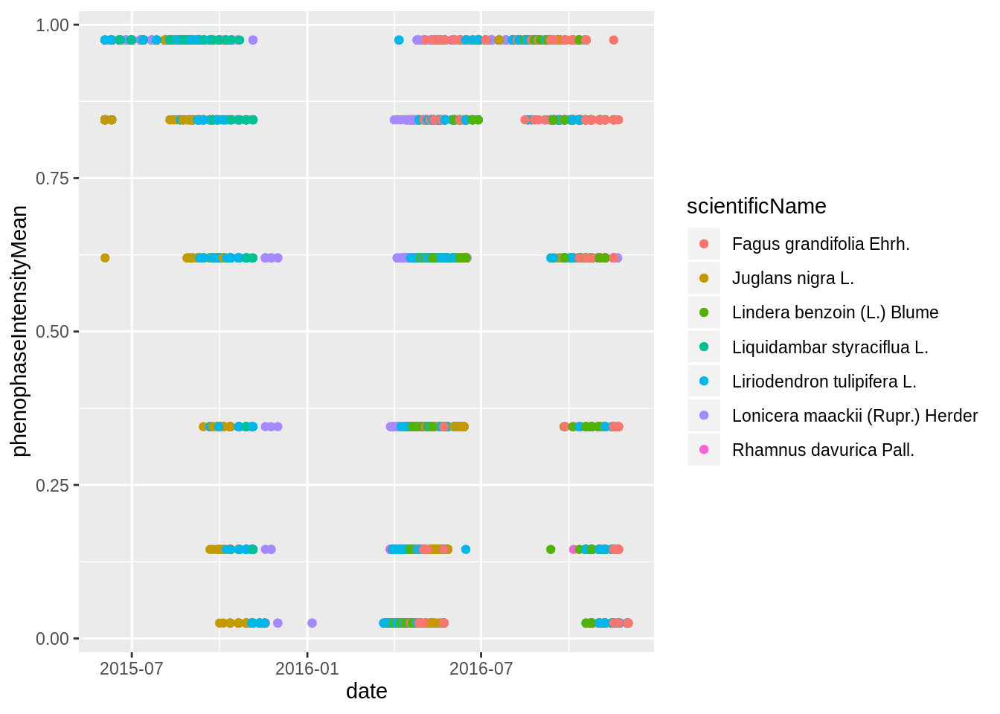
The pattern we would expect is already visible in this first plot - the leaves come out in the spring, then disappear again in October. But there might be differences between species and between individuals in a species. One way we could try to assess this is to fit the same model to subgroups of the data and then compare the fitted parameters to see if there are differences.
Let’s try to fit a sine wave to the phenophase intensity. A generic sine wave has four parameters:
\[y = A \text{sin}(kx - b) + c\] where \(k = 2\pi / T\), \(T\) is the period or length of time between peaks, \(A\) is the amplitude, \(b\) is the phase, and \(c\) is the vertical shift or offset.
Let’s plot a sine wave:
# plot a sine wave
x <- seq(0, 3, 0.01)
A <- 1
k <- 2*pi
b <- 0.5
c <- 0
qplot(x, A*sin(k*x-b)+c) +
geom_line()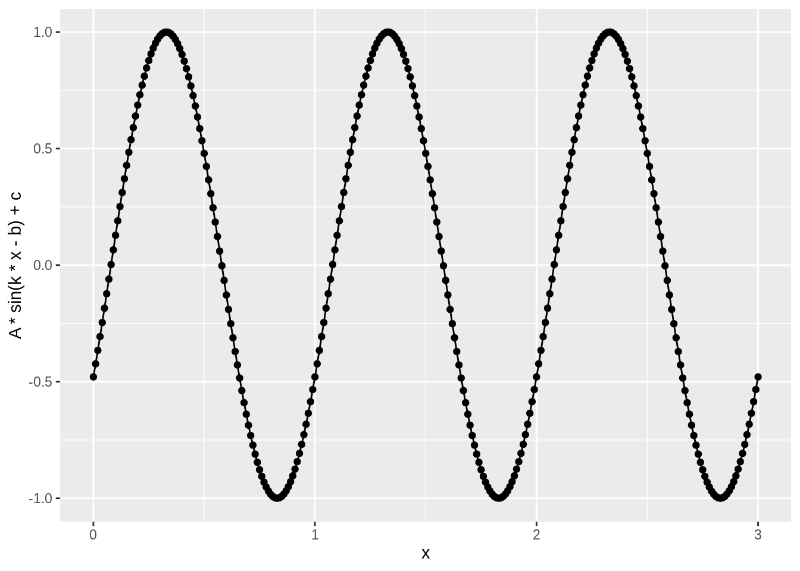
Note that we’re not solving a differential equation to get our model - we’re just assuming some shape for our function. In general you should choose models that make sense and that you have some reason for choosing; this is an example that would probably not be used by true phenologists but will roughly match the pattern in the data. A sine wave is the one of the simplest ways to express an oscillation.
In order to use the date as a numeric x-axis for fitting purposes, we need to convert it from a date object to a numeric object.
## Date[1:12573], format: "2015-06-25" "2015-06-25" "2015-06-25" "2015-06-25" "2015-06-25" ...# create a list of all the dates in ascending order
dates = plant_pheno %>%
arrange(date) %>%
select(date)
# create a function to subtract two dates
subtract_dates <- function(date1, date2) {
result <- date1 - date2
}
# create a numeric dates list to use in fitting
dates_numeric <- mapply(subtract_dates,
dates$date, # first argument in subtract_dates function
dates$date[1]) # second argument in subtract_dates function - the first date
# add numeric dates to the dataframe
plant_pheno$date_numeric <- mapply(subtract_dates,
plant_pheno$date,
dates$date[1]) # subtract the first date# drop rows that have NA in phenophaseIntensityMean column
plant_pheno <-
plant_pheno[!is.na(plant_pheno$phenophaseIntensityMean),]Let’s fit a particular individual’s phenophase intensity.
# find an individual
plant_pheno %>%
filter(scientificName == "Liriodendron tulipifera L.") %>%
select(scientificName, individualID) %>%
head(1)## # A tibble: 1 x 2
## scientificName individualID
## <chr> <chr>
## 1 Liriodendron tulipifera L. NEON.PLA.D02.SCBI.06071# make a data frame with one individual
tulip_tree <- plant_pheno %>%
filter(individualID == "NEON.PLA.D02.SCBI.06071")Now we will create a test sine function to get a rough idea for the parameters. I played around with these numbers ahead of time so that we could know roughly which parameter regime to search.
# period = 365 days
# wavenumber of sine function = 2 * pi/period
sine_model <- function(x, amplitude, period, phase, offset) {
return(amplitude*sin(2*pi/period*x + phase) + offset)
}
A <- 0.5 # phenophase intensity values go between 0 and 1
offset <- 0.5 # add 0.5 to make min 0 and max 1
period <- 365 # number of days in a year
phase <- 0.5 # this is a guess
guess_curve <- sine_model(dates_numeric, A, period, phase, offset)qplot(x = dates$date, y = guess_curve) + # guess data
geom_point(data = tulip_tree, # actual data
aes(x = date, y = phenophaseIntensityMean, colour = scientificName)) 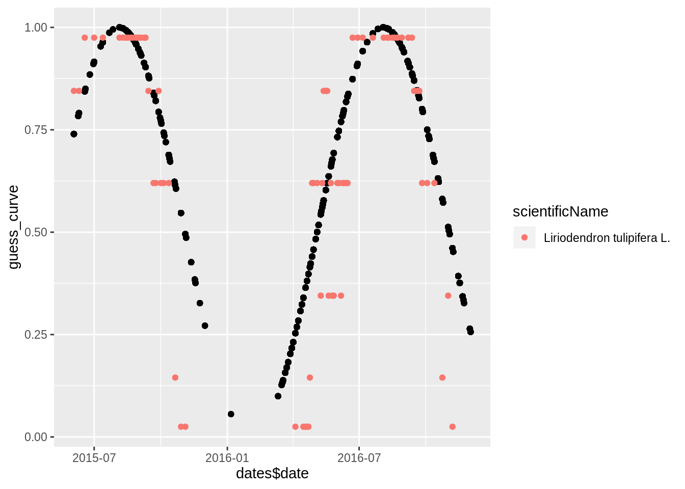
We will only fit \(b\), the horizontal shift, since we already know the other parameters: we know that the minimum and maximum must be 0 and 1 since the intensity goes from 0 to 100%, and this sets both \(c\) and \(A\). We also know \(k\), since we know that the oscillation should go around once in a year (365 days). If we were being more fancy, we might want to take into account things like temperature and leap years; there is a pheno package in R specifically for plotting and analyzing phenological data.
# Make a range of b parameter values to try
b_vals <- seq(0.2, 0.8, by = 0.01)
# use the function 'sapply' to loop over b_vals list
resids_sq <- sapply(b_vals, function(b) {
prediction <- 0.5*sin(2*pi/365*tulip_tree$date_numeric + b) +0.5
residuals <- prediction - tulip_tree$phenophaseIntensityMean
sum(residuals^2)
})As before, plotting the sum of the residuals squards vs. the fit parameter will show us if it worked: the best fit is the minimum of the curve.
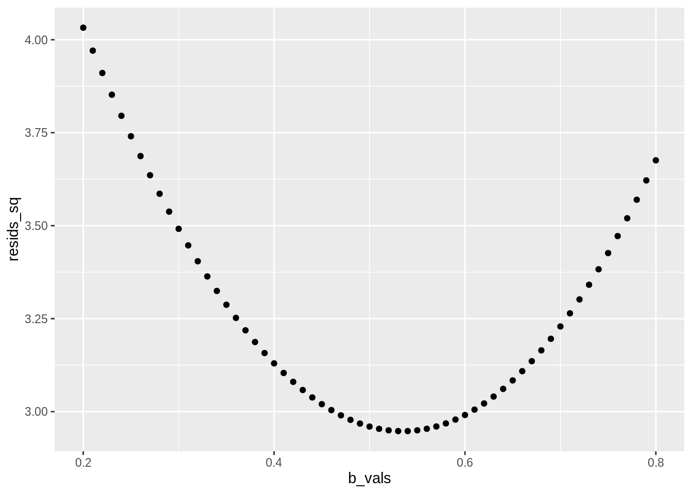
We can see visually that the minimum is around \(b = 0.5\), but to extract that number from the list we can use the function which as before:
## [1] 0.53Finally, let’s plot the fit against the original data:
ggplot(data = tulip_tree, aes(x = date, y = phenophaseIntensityMean)) +
geom_point() +
geom_point(aes(x = date, y = 0.5*sin(2*pi/365*tulip_tree$date_numeric + b_fit) +0.5, colour = 'red'))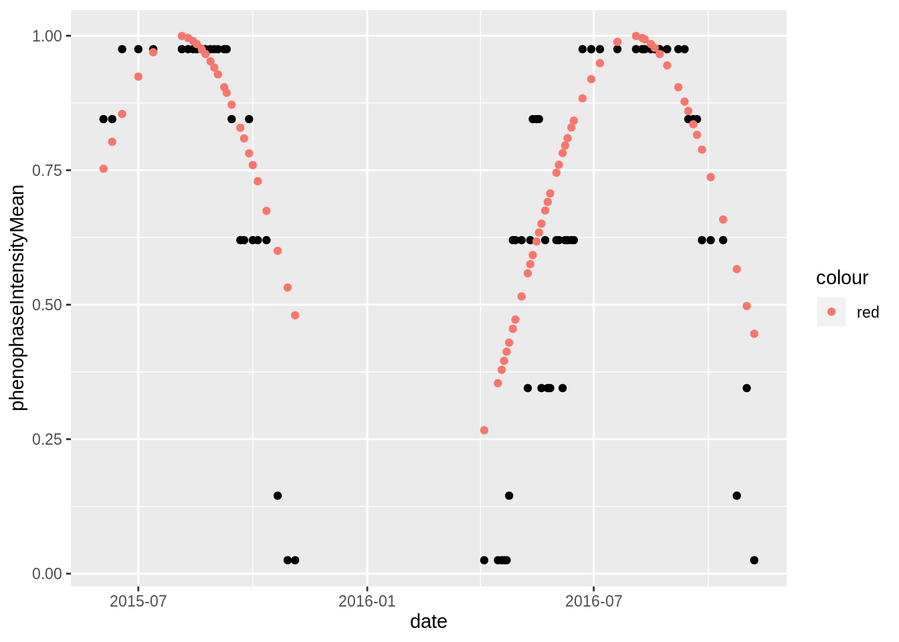
Not bad! Next, we’ll do this for every single individual in the entire dataset. With fits for each individual, we can look at the distribution of the phase shifts for each species to get a sense of when each species gets its leaves.
# Make a range of b parameter values to try
b_vals <- seq(0.01, 1.3, by = 0.015)
# create a function that does least squares for this model
least_squares <- function(df, b_vals) {
resids_sq <- sapply(b_vals, function(b) {
prediction <- 0.5*sin(2*pi/365*df$date_numeric + b) +0.5
residuals <- prediction - df$phenophaseIntensityMean
sum(residuals^2)
})
return(data.frame(b_vals, resids_sq))
}
# create a data frame that contains the residuals grouped by species
resids_sq_individuals <- plant_pheno %>%
group_by(individualID, scientificName) %>%
do(data.frame(val=least_squares(., b_vals)))ggplot(resids_sq_individuals, aes(x=val.b_vals, y = val.resids_sq, colour = scientificName)) +
geom_point()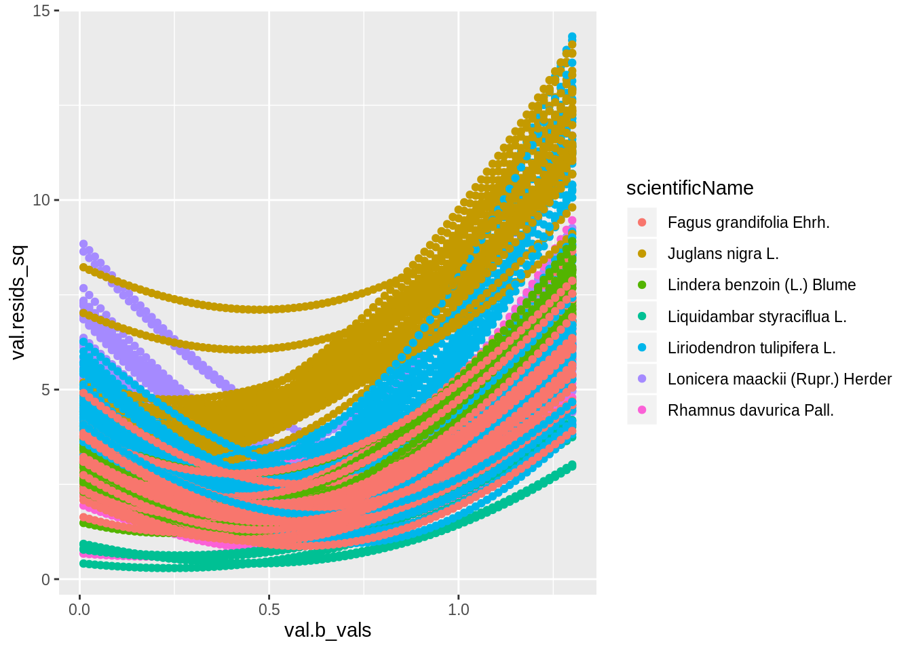 Get the best fit \(b\) value for each individual:
# store the best fit values in a new data frame
b_df_all <- resids_sq_individuals %>%
group_by(individualID, scientificName) %>%
summarize(phase = b_vals[which(val.resids_sq== min(val.resids_sq))])
head(b_df_all)## # A tibble: 6 x 3
## # Groups: individualID [6]
## individualID scientificName phase
## <chr> <chr> <dbl>
## 1 NEON.PLA.D02.BLAN.06201 Lonicera maackii (Rupr.) Herder 0.655
## 2 NEON.PLA.D02.BLAN.06202 Rhamnus davurica Pall. 0.565
## 3 NEON.PLA.D02.BLAN.06203 Lonicera maackii (Rupr.) Herder 0.64
## 4 NEON.PLA.D02.BLAN.06204 Rhamnus davurica Pall. 0.565
## 5 NEON.PLA.D02.BLAN.06205 Lonicera maackii (Rupr.) Herder 0.685
## 6 NEON.PLA.D02.BLAN.06206 Rhamnus davurica Pall. 0.595We have best fit values for the phase for every individual plant in our dataset. To visualize this, we will make a violin plot of the phases, grouped by species.
# violin plot
ggplot(b_df_all, aes(x = scientificName, y = phase, colour = scientificName)) +
geom_violin(scale = 'count', draw_quantiles = 0.5) +
geom_jitter(height = 0, width = 0.1) +
theme(axis.title.x=element_blank(),
axis.text.x=element_blank(),
axis.ticks.x=element_blank())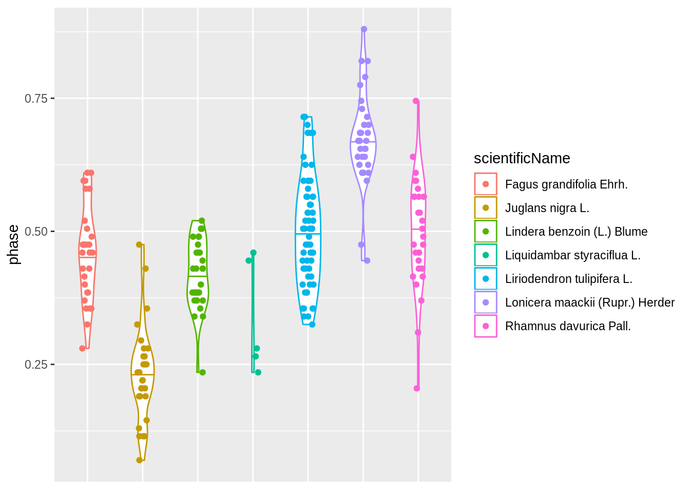
The phase \(b\) is a positive number for each of these, and in our model we fit the curve like this:
\[y = A\text{sin}(kx + b) + c\] A positive \(b\) shifts the curve to the left, so our model suggests that species with larger \(b\) either get their leaves earlier, lose their leaves earlier, or peak earlier, or some combination of all three. I’m not a phenologist, but we can do some reading to see if the general pattern we observe is really there: Lonicera maackii, Amur honeysuckle (an invasive species), does in fact leaf out very early in the spring and keeps its leaves longer than other plants, according to this paper by McEwan et al. (2009).
This actually suggests a limitation to our approach: by fitting the same period of sine curve to each dataset, we have no information on how long the leaf season is for each plant: we have no way of distinguishing a plant that leafs earlier and loses its leaves earlier from a plant that peaks earlier and keeps its leaves longer. It’s hard to interpret what \(b\) actually means in terms of the phenophase. Let’s plot the smallest and largest \(b\) species together:
plant_pheno %>%
filter(taxonID == "LOMA6" | taxonID == "JUNI") %>% # easier than typing the full scientific name
ggplot(aes(x=date, y = phenophaseIntensityMean, colour = scientificName)) +
geom_point()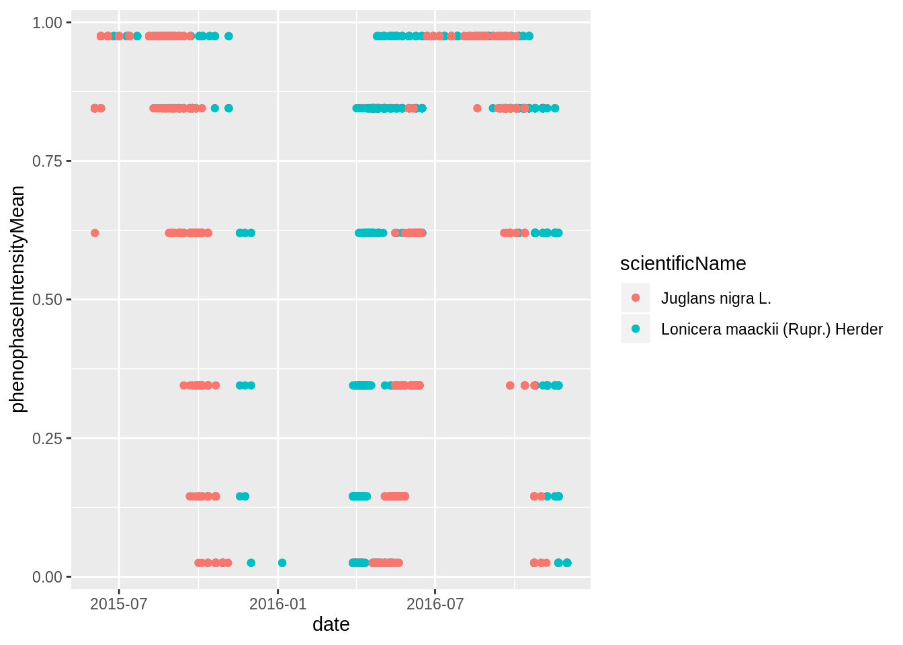
By examining these two species side by side, we can see that Lonicera maackii peaks at about the same time as Juglans nigra, but it gets leaves earlier and keeps its leaves later. To actually distinguish each of these events, we would need a more complicated model with more fit parameters.
# https://uoftcoders.github.io/rcourse/data/plant-biomass-preprocess.csv
plant_data <- read.csv("plant-biomass-preprocess.csv")We can use our usual tricks to see what’s in our dataset:
summary(plant_data) # create a summary of the dataset
head(plant_data) # display the first few rows of the data
colnames(plant_data) # show the column namesLet’s plot just one of the habitats, sites, and treatments vs. time and colour by species.
library(dplyr)
library(tidyr)
plant_data %>%
filter(habitat == "Tundra") %>%
filter(site == 3) %>%
filter(treatment == "rodentexclosure") %>%
gather(Species, Value, -year, -treatment, -habitat, -site) %>%
ggplot() +
geom_point(aes(x = year, y = Value, color = Species))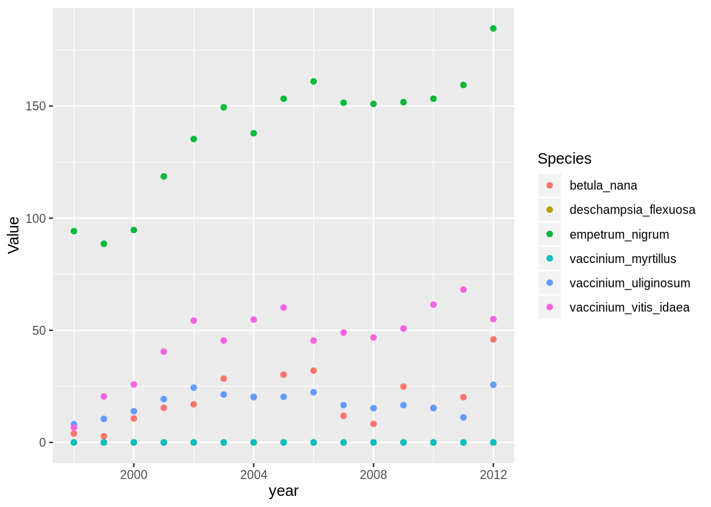
Empetrum nigrum looks like it could be following logistic growth, so let’s try to fit the data to that model. First, let’s make a new variable with just the data we want to fit.
e_nigrum <- plant_data %>%
filter(site == 3) %>%
filter(habitat == "Tundra") %>%
filter(treatment == "rodentexclosure") %>%
select(year, empetrum_nigrum) Now we define a logistic model function so that we can numerically generate the model’s solution and compare it to the data.
logistic_fn <- function(t, state, parameters) {
# Calculates dN/dt for the logistic equation
# t: time point at which to evaluate derivative (doesn't actually change anything in this example)
# state: vector of variables (here it's just N)
# parameters: vector of model parameters c(r, K)
N <- state
r <- parameters[1] # the first element of the parameters vector is r
K <- parameters[2] # the second element of the parameters vector is K
#rate of change
dN <- r * N * (1 - N / K)
#return rate of change
return(list(c(dN)))
}Let’s try running a single numerical solution and plotting it alongside the data.
library(deSolve)
parameters <- c(r = 0.5, K = 150)
state <- c(N = e_nigrum[1,2]) # the first row and second column is the initial population size
times <- seq(0, 14, by = 1) # make the same time vector as the data
result <-
ode(
y = state,
times = times,
func = logistic_fn,
parms = parameters
)# Plot
result <- data.frame(result)
p1 <- ggplot(e_nigrum) +
geom_point(aes(x = year, y = empetrum_nigrum))
p1 +
geom_point(aes(x = time + 1998, y = N), result, color = 'blue') +
geom_line(aes(x = time + 1998, y = N), result, color = 'blue')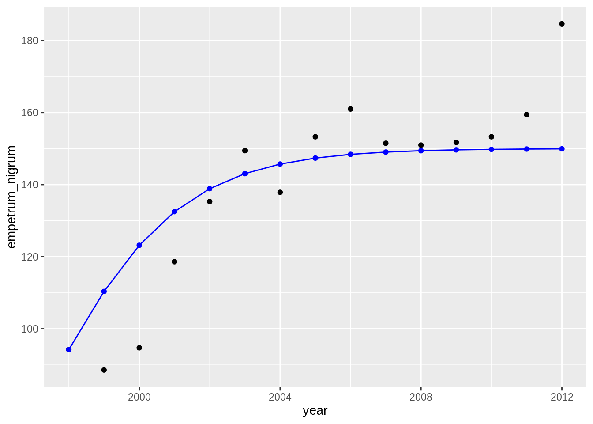
Now we’ll define a grid of \(r\) and \(K\) values to try, then calculate a numerical solution for each combination of parameters. Here we’re combining solving the differential equation and least squres in one fell swoop: for each combination of parameters, we use ode to generate a numerical solution, then calculate the residuals and the fit.
logistic_pred_fn <- function(r, K) {
result <- ode(y = state,
times = times,
func = logistic_fn,
parms = c(r = r, K = K))
result <- data.frame(result)
residuals <- result$N - e_nigrum$empetrum_nigrum
sum(residuals^2)
}
rvals <- seq(0.05, 1.0, by = 0.05)
Kvals <- seq(120, 180, by = 5)
# Create a two column data frame with every combination of rvals and Kvals
params <- expand.grid(r = rvals, K = Kvals)
# Apply the logistic_pred_fn to each combination of rvals and Kvals.
# This is known as vectorization, which is R's strength.
resids <- mapply(logistic_pred_fn,
params$r, # First arg in logistic_pred_fn
params$K) # Second arg in logistic_pred_fn
resids <- matrix(resids, nrow = length(rvals), ncol = length(Kvals))We can use the library lattice to plot the surface of sums of residuals squared:
library(lattice)
wireframe(
resids,
shade = TRUE,
xlab = "R",
ylab = "K",
scales = list(arrows = FALSE) # fix so that axes are correct numbers
) 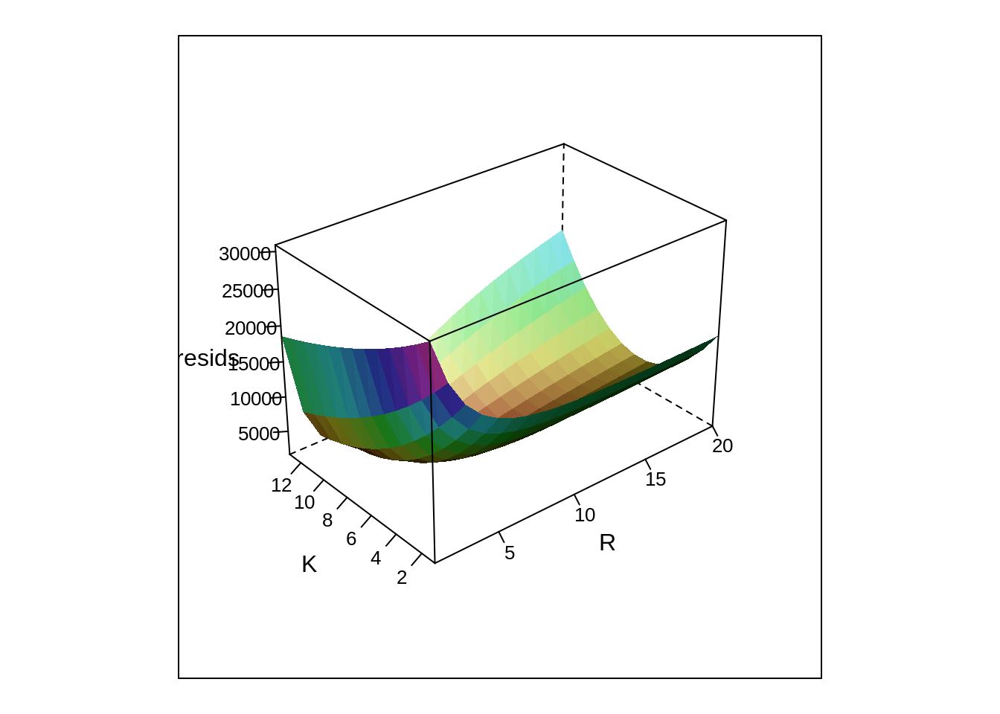
Now we extract the values of \(r\) and \(K\) that minimize the sum of residuals squared:
best_fit <- which(resids == min(resids), arr.ind = TRUE)
r_fit <- rvals[best_fit[1]] # r is varied across the rows of the surface
K_fit <- Kvals[best_fit[2]] # K is varied across the columns of the surfaceAnd now we can plot the best fit curve with the data:
result <-
ode(
y = state,
times = times,
func = logistic_fn,
parms = c(r = r_fit, K = K_fit)
)
result <- data.frame(result)
p2 <- ggplot(e_nigrum) +
geom_point(aes(x = year, y = empetrum_nigrum))
p2 +
geom_point(aes(x = time + 1998, y = N), result, color = 'blue') +
geom_line(aes(x = time + 1998, y = N), result, color = 'blue')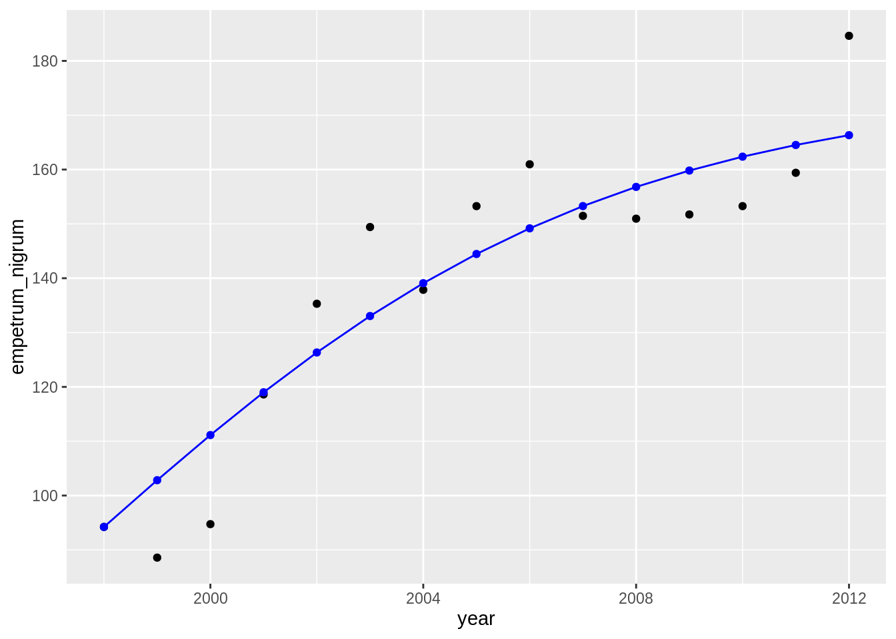
You can do this process with more than two parameters as well, but the search space will be larger and the simulations necessary will take longer.
Maximum likelihood is a way of finding parameters of a given probability distribution that best match data. It answers the question: which paremeter(s) make the data most likely to have occured?
Likelihood is defined as \(P(\text{data} | \text{model})\), which you can read as the probability of the data given the model. This is subtly different from \(P(\text{model} | \text{data})\), the probability of the model given the data, which is what you’re really after. But according to Bayes’ theorem, these two quantities are proportional, and so in practice, maximizing the likelihood is equivalent to maximizing the probability of a particular model given your data.
Bayes’ theorem, for the curious:
\[ P(A | B) = \frac{P(B | A)P(A)}{P(B)}\]
Least squares is the maximum likelihood solution for the assumption that errors are Gaussian distributed. This assumption can be formulated like this: for a set of data \(y\) as a function of \(x\), let \(e_i\) be the difference between the predicted and measured value of \(y\) at point \(x_i\). We assume \(e_i\) follows a Gaussian or normal distribution with mean \(0\) and variance \(\sigma^2\):
\[P(e_i) = \frac{1}{\sqrt{2 \pi \sigma^2}} \text{e}^{-\frac{e_i^2}{2\sigma^2}}\]
We also assume that each data point \(y_i\) is independent, so the probability for the entire dataset is a product of all the probabilities for each data point:
\[P(\vec{e}) = P(e_1)P(e_2) ... P(e_N) = \prod_{i=1}^N P(e_i) \]
This is the likelihood, this is the quantity we want to maximize. To make our lives easier, we can also maximize the logarithm of the likelihood instead, since the logarithm is an increasing function and its maximum will still be in the same spot.
The log-likelihood is
\[\sum_{i=1}^N \text{log}P(e_i) = \sum_{i=1}^N \left( \text{log} \frac{1}{\sqrt{2 \pi \sigma^2}} - \frac{e_i^2}{2\sigma^2} \right)\]
\[ = N \text{log} \frac{1}{\sqrt{2 \pi \sigma^2}} - \frac{1}{2\sigma^2}\sum_{i=1}^N e_i^2\]
The first term is a constant, and so we can forget about it when looking for the maximum. What we’re left with is wanting to maximize
\[- \frac{1}{2\sigma^2}\sum_{i=1}^N e_i^2\]
Since \(\sigma\) is a constant, we can drop the prefactor as well. Finally, we can change the sign and minimize what’s left:
\[\sum_{i=1}^N e_i^2\]
But remember that \(e_i\) is just the difference between the predicted \(y_i\) and the actual data point \(y_i\), so the quantity above is just the sum of the squares of the residuals, exactly what we want to minimize in least squares.
For a set of data \(y\) as a function of \(x\), let \(e_i\) be the difference between the predicted and measured value of \(y\) at point \(x_i\). We assume \(e_i\) follows a Gaussian or normal distribution with mean \(0\) and variance \(\sigma\): The log-likelihood is:
\[ = N \text{log} \frac{1}{\sqrt{2 \pi \sigma^2}} - \frac{1}{2\sigma^2}\sum_{i=1}^N e_i^2\]
Generate some data:
times <- seq(0,10, by = 0.2) # sample times
r <- 0.2 # growth rate
N0 <- 10 # initial population
# use the function 'rnorm' to add noise to the data
Ndata <- N0*exp(r*times) + rnorm(n = length(times), mean = 0, sd = 0.75)
Ndata[1] <- N0 # fix the starting value to be N0 - this means we don't have to fit the intercept
qplot(times,Ndata) # check with a plot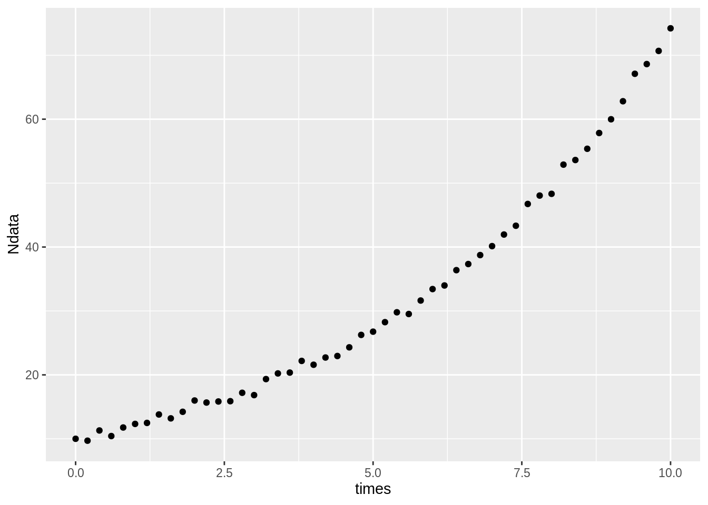 Fit the data to our model using least squares:
# Make a range of r parameter values to try
r_vals <- seq(0.01, 0.3, by = 0.01)
# use the function 'sapply' to loop over r_vals list
# everything inside curly braces is a function that gets executed for each value of r
resids_sq <- sapply(r_vals, function(r) {
prediction <- Ndata[1] * exp(r * times) # we're not fitting N0, just assuming it's the first data point
residuals <- prediction - Ndata
return(sum(residuals^2))
})
best_fit <- which(resids_sq == min(resids_sq))
r_fit <- r_vals[best_fit] The formula for AIC is
\[\text{AIC} = -2\text{log} \mathcal{L} + 2p\]
Calculate the log-likelihood and AIC:
prediction <- Ndata[1] * exp(r_fit * times) # predicted fit
e_vec <- prediction - Ndata # vector of residuals
N <- length(Ndata) # number of data points
sigma <- sd(e_vec) # standard deviation of residuals
log_likelihood <- N*log(1/sqrt(2*pi*sigma^2)) - 1/(2*sigma^2) * sum(e_vec^2)
log_likelihood## [1] -49.47769## [1] 102.9554Be careful though: this AIC value will not necessarily be the same as what you get from lm or glm: it could be because you’ve transformed your data and so the maximum likelihood solution is not the same, or that lm or glm uses another method with a different likelihood. Either way, it’s important to know the assumptions that go into it when you’re comparing models.
This work is licensed under a Creative Commons Attribution 4.0 International License. See the licensing page for more details about copyright information.